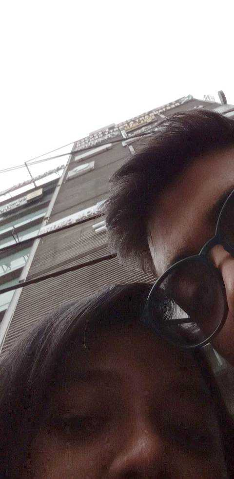
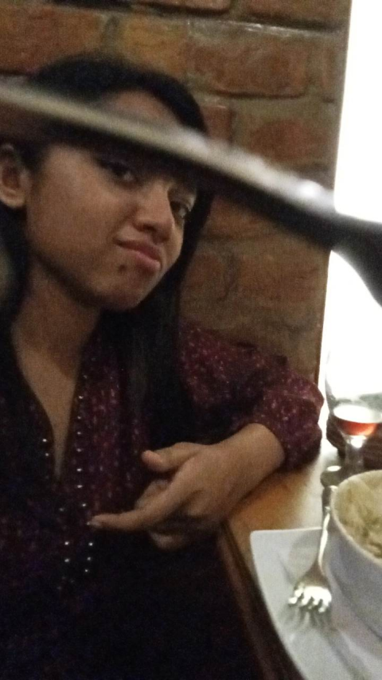
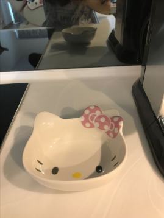
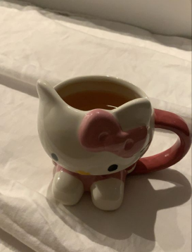

Amour

There are a few things in life so beautiful they hurt: swimming in the ocean while it rains, reading alone in empty libraries, the sea of stars that appear when you’re miles away from the neon lights of the city, bars after 2am, walking in the wilderness, all the phases of the moon, the things we do not know about the universe, and you. -Beau Taplin



Here’s the other half of the set so you can have a full hello kitty meal.
Here’s a poem I wrote:
In the grasp of a cloud
there's always sky
when its blue, when its dark.
Underneath the moon
a television Keeps on playing
a static noise,
because too much noise is
always static.
too many colors, black.
too much fondness, blue.
But still i know, you think of me
exactly the way i think about you.
It reflects.
I have time, for you.